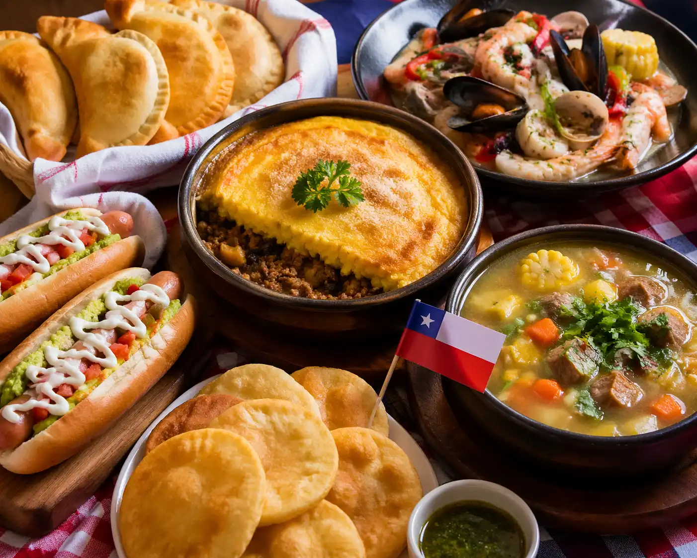
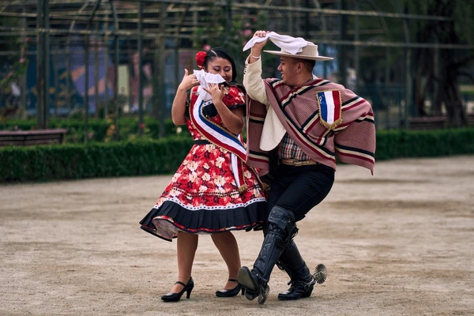
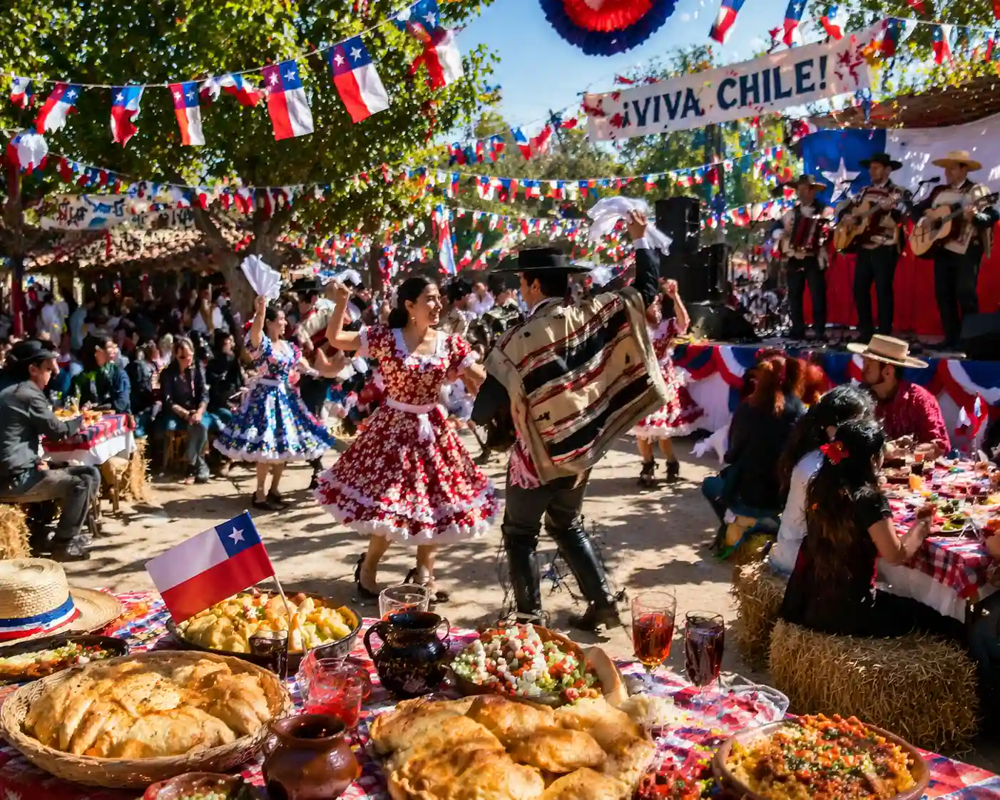

Traditional Food
Chile is known for empanadas, pastel de choclo, seafood dishes, sopaipillas, and complete hot dogs. Food is an important part of family gatherings and celebrations.
Discover Chile
Travel and Culture Guide
Chilean culture is shaped by geography, history, family traditions, regional identity, music, food, and everyday community life. From the north to Patagonia, each region has its own character and traditions.

Chile is known for empanadas, pastel de choclo, seafood dishes, sopaipillas, and complete hot dogs. Food is an important part of family gatherings and celebrations.

One of the most recognized traditions is the cueca, Chile’s national dance. Music and dance are especially important during national celebrations.

Fiestas Patrias in September is one of the most important celebrations in Chile. People gather to enjoy food, music, dancing, and local traditions.
Family, friendship, and hospitality are important values in Chilean culture. In many places, people enjoy spending time together over meals, community events, and family celebrations. Chile also has a strong connection to nature, and many local traditions reflect the country’s mountains, coast, countryside, and regional identity.
Chile is a beautiful destination, but visitors should still use common sense and stay alert in busy public places. In large cities and tourist areas, phone snatching, pickpocketing, and bag theft can happen, especially when people are distracted.
At Santiago Airport, travelers should avoid unofficial taxis. Official travel guidance warns that unofficial airport taxis may overcharge passengers or even rob them. It is safer to use authorized airport transportation or book through official counters or trusted app-based services.
Travelers should also be careful with phones, wallets, passports, and backpacks in crowded areas, public transportation, bus terminals, and popular tourist spots. Keep valuables close, avoid showing expensive items openly, and do not leave bags unattended.
Firearms are strictly controlled in Chile. Carrying or possessing a gun without proper authorization can lead to serious legal consequences. Personal carry permits are limited, and illegal possession or carrying of firearms is punishable under Chilean law.
Best advice: use official airport transport, stay aware of your surroundings, protect your phone and documents, and follow local laws carefully.